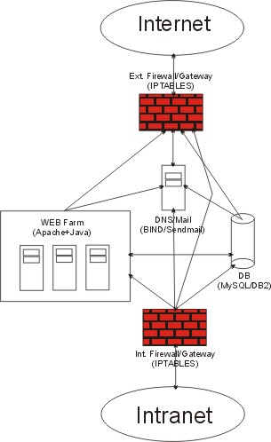

Въведение През годините електронната търговия придоби особена популярност. Атрактивността на електронните магазини се обяснява с много фактори като: лекота на поддържане на мястото за търговия, огромната база от потенциални клиенти, удобство в разплащането. Често опитите завършват с провал поради неправилно планиране, превишаване на бюджетите, използване на неподходящ софтуер. За да разберем причините за успеха или неуспеха на електронната търговия е необходимо да се дефинират най-важните условията за развитието на подобен род бизнес, а именно:
При отсъствието на едно от тези условия е невъзможно да се реализира успешен бизнес модел. Изисквания към операционната система (ОС) на магазин за електронна търговия Инфраструктурата на електронен магазин трябва да отговаря на изискванията засегнати по-горе. ОС като един от основополагащите елементи при правилен подбор може да даде предпоставка за достигане на необходимите резултати. Надеждната система за разплащане с клиентите и доставчиците е от особено значение. Много от първите магазини са търпели загуби в следствие на проблеми със сигурността си. За да е изпълнено условието за надеждност ОС трябва:
Това се постига като се проектират системи с минимална интерактивност и максимални ограничения в достъпа. Намаляването на предоставените услуги води до намаляване и на потенциалните “дупки” в защитата. За да привлича клиенти трябва да се осигури възможност за по-голяма интерактивност от конкуренцията, да е лесна за работа, с красив вид като се използват скриптове в страниците и да предоставя в някои случаи и уникални услуги. За комфорта на работа е необходимо и наличието на високоскоростна и нефилтрирана връзка с Интернет. Това води до непреодолимо противоречие във функционалността на ОС, върху която се гради електронния магазин. От една страна тя трябва да е абсолютно надеждна и да не допуска сривове от страна на хардуера и на приложния софтуер, който изпълнява. За да се изпълни това условие приложния софтуер трябва да има колкото се може по-малко възможност за връзка с ресурсите на ОС и другите приложения, които се изпълняват едновременно. От друга страна интерактивността изисква по-голямо взаимодействие със системата и приложенията. Явно е необходим компромис поставящ големи изисквания пред кандидатите. Отношенията с бизнес партньорите също могат до бъдат повлияни от избора на ОС. Несъвместимостта и грешки при транзакциите могат да доведат до неизпълнение на поставените цели. Приложното осигуряване тук играе решаваща роля, но погрешния избор на платформа може да доведе до ограничаване на възможностите до недостатъчен брои и скъпи приложения, предоставящи излишна а в някои случаи и опасна за сигурността функционалност. Така изискванията могат да се сведат до следното:
От всичко казано до тук се стига до извода, че е нужна балансирана във всяко отношение, надеждна, адаптивна система, която да предоставя набор от разнообразни по функции, качество и цена приложения. Такива по настоящем са Windows NT/2000, SUN Solaris, BSD и Linux.  Linux Една от причините за възхода на Linux като ОС с Интернет приложимост са именно нейните качества, отговарящи на изискванията за електронна търговия. Макар и да е млада като ОС, тя е базирана на основите на Unix явяваща се най-удачната реализация на мрежова ОС. Въпреки че по философия и проектиране Linux е Unix, моделът на разработка и развитие, възприет при нея, преодолява много от слабостите на подобните й системи. Развива се на принципа на отворения код, а именно всяка част от ядрото и останалите компоненти е достъпна за модификации, предложения, доразвитие без това да е свързано с изискване за заплащане на лицензни такси за каквото и приложение да се използва. Ограниченията пред разработчиците са, че не може да се включва непроменен код в продукти за комерсиални цели, всички модификации трябва да се публикуват под същия лиценз и при условие, че кодът с модификациите също е отворен. Какво означава това за самата ОС. Над кода работят много програмисти и допуснатите грешки се отстраняват бързо. Създава се база за конкуренция в процеса на самата разработка, като идеите се налагат въз основа на интересите на потребителите и разработчиците, а не в интерес на комерсиални компании стараещи се да прокарват свои стандарти. Алтернативата е дълбоко залегнала в модела на операционната система. Поради лекотата за разработка и най-вече заради липсата на ограничения свързани с лиценза за приложните продукти под Linux, на пазара има много конкуриращи се приложения. Те обхващат почти всички сфери вариращи от безплатни решения, решения за некомерсиални цели и програмни продукти разпространяващи се при строги правила за ползване и приложение. В резултат се получава ОС способна да поеме както неотговорни задачи, така и критични приложения. Води се до намаляване на първоначалните инвестиции за откриване на нов бизнес и необвързаност с определен разработчик или доставчик на оборудване. Наред със своите предимства като слабост на системата могат да бъдат посочени:
По тези проблеми се работи усилено и има голям напредък през изминалата година. Тава е особено очевидно след официалното пускане на kernel 2.4.x. Предимствата й изразяващи се в гъвкавост, сравнително ниски хардуерни изисквания за някои задачи и безплатно разпространение, я правят привлекателна за основа на електронната търговия. Как Linux се справя с изискванията на електронната търговия Сигурност: Правилно конфигуриран и надеждно защитен Linux е трудно пробиваем, а в някои случаи компромисът с неговата защита е почти невъзможен. Тук както и при другите операционни системи, сигурността зависи от надеждността на приложенията, изпълнявани от сървъра. В това отношение отвореният сорс дава добра гаранция за надеждността, проблемите се откриват сравнително бързо и се отстраняват почти веднага. Прозрачността на системата и сравнително лесния начин за разбиране на конфигурационните файлове правят възможно отстраняването на проблема или до ограничаването му преди да е публикувана съответната “кръпка” от съответния разработчик. Пълният и лесен достъп до всяка функция на програмното осигуряване е предпоставка за правилното и безопасно конфигуриране на всеки сървър. Наличието на достатъчно изчерпателна документация за повечето от използваните продукти е също в плюс на системата. Linux може да се използва за изграждането на ‘firewall’, който дава достатъчна защита и по този начин може да спести средства за закупуването на специализирано мрежово оборудване. Той е напълно в състояние да поеме и функциите на маршрутизатор и шлюз, като извършва елементарен контрол на натоварването (NAT в kernel 2.4.x). Поддръжката на kerberos (система за оторизация посредством сървър посредник) е друго предимство, гарантиращо изграждането на надеждни мрежи. Като цяло се налага извода, че след провеждане на необходимите мероприятия, Linux предоставя достатъчна сигурност от неоторизиран достъп. Надеждност при работа с клиенти: В процеса на електронната търговия се предава поверителна информация. За да се предотврати нежеланото и изтичане се е наложил стандарта за осъществяване на криптирана връзка SSL. С реализирането на проекта OpenSSL в Linux има безплатна възможност за приложението на този стандарт. Следва заключението, че Linux отговаря и на изискването за осигуряване достатъчна сигурност в процеса на работа със системата и гарантира транзакциите. Връзка с Интернет: Поради своята мрежова “натура” Linux предоставя практически неограничени възможности за връзка със световната мрежа. Могат да бъдат използвани всички видове връзки (ISDN, ADSL, VSAT,FDDI…). По отношение на хардуера поддържат се повечето компоненти. Има известни затруднения с някои USB устройствата, но с развитието на ядрото (особено след версия 2.4.4) се очаква те да отпаднат. Поддръжката на множество протоколи като новия IPv6, както и възможността за тунелиране правят Linux незаменима в някои ситуации. Връзка с Интранет: Съществуването на сайт за електронна търговия е немислимо без връзка с машините на обслужващия персонал и администраторите. В такъв случай достъпът до Интранет мрежата на компанията е наложителна. За комуникация с други Unix системи Linux използва NFS, а за Windows клиенти и сървъри Samba (клиент/сървър програма за Microsoft Networks). Гарантирана е и безпроблемна работа независимо от структурата на Интранет на компанията. Средства за разработка: Средствата за разработка са сред най-силните черти на Linux. Съществуват развойни среди за всички използвани езици, което само повишава функционалността на системата. В електронната търговия особено значение като алтернатива на Microsoft .NET придоби Javaили по-точно Java 2 Enterprise Edition. Първите продукти базирани на Java освен за Sun Solaris са реализирани и за Linux. По този начин Linux предоставя затваряне на цикъла на разработката и реализация на продукта. Бази от данни: В реализацията на всеки проект за електронен магазин системите за бази от данни играят съществено значение. В това отношение за Linux са реализирани както и безплатни и малофункционални решения (MySQL), така и скъпи комерсиални продукти (Oracle, DB2). Изборът на система за управление на бази от данни се определя главно от конкретната задача и от бюджета на предприятието. От него до голяма степен зависи и избора на останалата част от приложния софтуер. Това в известни случаи може да се окаже лимитиращ фактор при проектирането на магазина. Обвързването със определена система за разплащания може да наложи един или друг избор в конкретния случай. Това са проблеми, с които се сблъскват и останалите операционни системи. С навлизането на .NET и Java Enterprise Edition базирани приложения този проблем ще бъде разрешен. И при това Linux е в изгодна позиция. Много разработчици залагат Linux като водеща платформа за своите приложения. Фирми като IBM разчитат на Linux за реализация на проектите си в областта на електронната търговия.[http://www.ibm.com/press/prnews.nsf/] Сравнение между Linux и Windows Linux се явява най-голям конкурент на Microsoft Windows NT/2000. Стратегията на софтуерния гигант за навлизане на пазара на сървъри срещна неочакван отпор от страна на Linux и бизнес модела на отворения код, който той представлява. Интересно е сравнението между двете ОС. Ядро: Ядрото и на двете операционни системи отговаря на основните изисквания: многозадачност, поддръжка на повече от един процесор, поддръжка на достатъчно количество памет, защитен режим на паметта, многопотребителска работа. Ядрото Windows NT/2000 се различава в различните си варианти в поддръжката на памет и процесори. Като негов недостатък може да се посочи невъзможността за оптимизация и добавяне на допълнителна функционалност. Грешките трудно се намират и отстраняват. Файлова система: Файловата система на Windows NTFS традиционно се смята за по-сигурна, а тази на Linux 2EXT като по-бърза. NTFS едва с последната си версия поддържа квоти, докато това е дълбоко залегнало във всяка Unix файлова система. Като плюс за NTFS може да се спомене възможностите за компресиране и криптиране. Засега това не е широко реализирано в Linux понеже се смята, че това дава защита повече от физически неоторизиран достъп. Сигурност: Общата сигурност в Linux е по голяма отколкото тази в Windows. Наличието на функции, които се полезни при един относително сигурен Интранет в Windows са опасни в среда като Интернет. Затворения код на програмите често възпрепятства навременното откриване и коригиране на наличните грешки. В това отношение Linux със своя отворен код предоставя по-голяма надеждност. Показателен е факта, че макар и кода на Linux да е на всеобщо обозрение намерените грешки в нето са почти толкова, колкото в Windows при положение, че Microsoft е в по-изгодна позиция поради затворения код. Лекота на поддръжка: Това е областта в която Windows има голямо предимство в лицето на добре интегрирания графичен потребителски интерфейс. Системите за управление са добри, но не са абсолютно сигурни и не предоставят достъп до всички възможности на системата. При Linux липсата на единен графичен интерфейс затруднява ежедневните операции до известна степен, но за сметка на това дава възможност за много по детайлно и прецизно конфигуриране.
Заключение В заключение може да се каже, че Linux е напълно пригоден за изграждането на електронен магазин. Той отговаря на всички основни изисквания. Само при изключително големи и натоварени ситуации е целесъобразно да се помисли за прехвърляне на част от натоварването на машина с друга платформа, което при всички случаи мрежа базирана на Linux би позволила. |
||||||||||||||||||||||||||||||||||||||||||||||